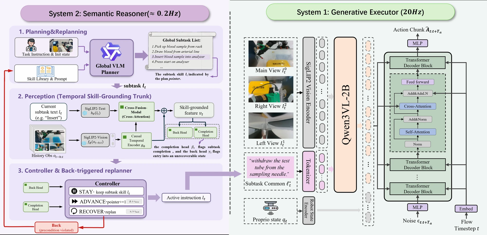

Abstract
Medical laboratory robots must perform contact-rich manipulation while preserving the action order prescribed by operating protocols. End-to-end imitation-learning and vision–language–action policies may confuse visually similar workflow stages, leading to stage-inconsistent actions during long horizon execution. We present Robo-MLT, a protocol-grounded dual-system framework that separates explicit workflow monitoring from continuous action generation. A frozen vision–language planner reads an initial observation of the workspace and instantiates an ordered sequence over an atomic-skill library. A lightweight temporal monitor then tracks execution with two heads: a completion head advances an explicit plan pointer at subtask boundaries, while a back head detects when an external disturbance has invalidated the preconditions of the active skill and triggers bounded, protocol-constrained replanning of the remaining plan. Conditioned on the active skill, a Qwen3-VL-based flow-matching executor generates continuous action chunks, while an asynchronous runtime streams robot commands at 20 Hz. Across 20 paired configurations, Robo-MLT achieves end-to-end success rates of 85% and 75% on blood-gas analysis and blood-sample tube sorting, respectively, compared with 70% and 60% for the strongest baseline π0.5. The results suggest that explicit workflow-state tracking can reduce stage-confusion errors in protocol-constrained manipulation.
Method Overview
Robo-MLT follows dual-process theory, separating low-frequency semantic monitoring, which maintains an explicit representation of workflow progress, from high-frequency continuous action generation for fine-grained manipulation. A frozen vision–language planner reads the initial workspace observation and instantiates an ordered plan over an extensible atomic-skill library. System 2 then tracks that plan with a dual-head execution monitor: a completion head advances the plan pointer at subtask boundaries, while a back head detects when an external disturbance has invalidated the preconditions of the active skill and triggers bounded, protocol-constrained replanning. System 1 executes the active skill, pairing a Qwen3-VL backbone with a flow-matching action head to generate continuous action chunks. An asynchronous runtime reconciles the two rates — System 2 updates the plan at roughly 0.2 Hz while System 1 streams closed-loop commands at 20 Hz — so explicit workflow tracking costs no control bandwidth.

Overview of Robo-MLT. A frozen vision–language planner maps a user command, the corresponding instrument protocol, and an initial scene observation to an ordered sequence of atomic skills. System 2 tracks this plan with a dual-head pointer controller and invokes protocol-constrained replanning when an external disturbance invalidates the active skill. System 1 executes the active skill with a Qwen3-VL-conditioned controller and a flow-matching action head.
Contributions
- We propose Robo-MLT, a hierarchical framework that separates explicit, low-frequency workflow monitoring from high-frequency generative control for long-horizon, fine-grained medical laboratory manipulation.
- We develop a lightweight, multi-frame dual-head execution monitor that tracks an ordered plan over an extensible atomic-skill library, advancing the plan pointer at subtask boundaries and invoking bounded, protocol-constrained replanning when an external disturbance invalidates the active skill. At the planning layer, new skills can be added without retraining System 2; each new skill still requires an executable low-level policy.
- We evaluate Robo-MLT on real-world medical laboratory tasks against representative IL and VLA baselines, and analyze task-level success, per-sample completion, execution time, and characteristic failure modes.
Comparison with Conventional Methods
Two paradigms dominate laboratory automation, and each fails on the blood-gas workflow in a characteristic way. Robo-MLT is designed to remove both failure modes.
Conventional fixed-program pipeline. The system senses the target once before motion and then executes an open-loop approach–grasp–lift. When an operator moves the tube mid-motion, there is no feedback path: the arm continues to the original waypoint and closes the gripper on an empty slot.
End-to-end IL/VLA policy. With no explicit representation of workflow progress, the policy cannot disambiguate the near-identical views just after insertion and just before withdrawal at the analyzer inlet. It re-issues the docking (insertion) action instead of withdrawing, so the tube is pushed back toward the inlet and the procedure stalls.
Robo-MLT (Ours)
Robo-MLT pins stage identity to an explicit plan pointer, so visually similar stages (insertion vs. withdrawal) are distinguished by workflow position rather than appearance, while the back head detects disturbances and triggers protocol-constrained replanning. System 1 streams closed-loop flow-matching actions at 20 Hz, so the workflow completes and recovers from mid-procedure interruptions.
BibTeX
@article{robomlt2026,
title = {Robo-MLT: A Dual-System Robotic Medical
Laboratory Technologist for Generative
Long-Horizon Manipulation},
author = {Anonymous},
journal = {Under review},
year = {2026}
}